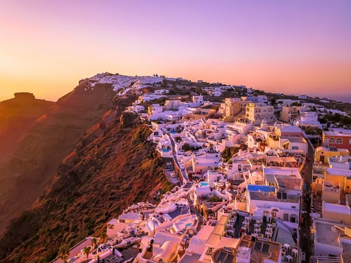
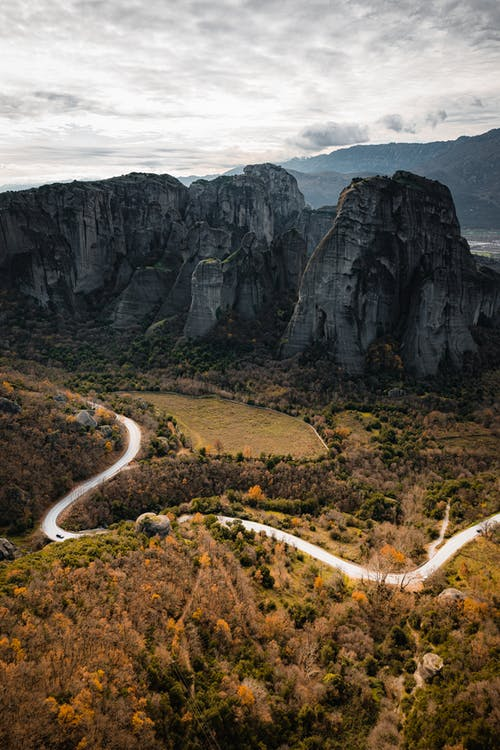
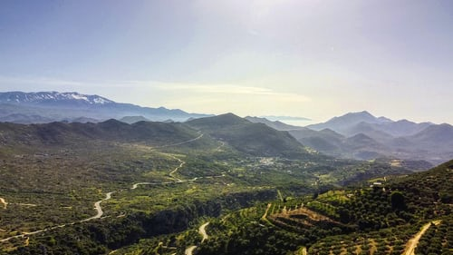
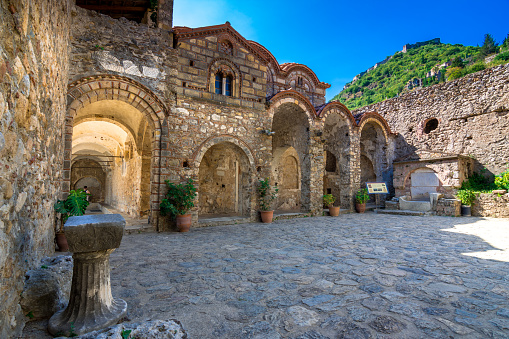

Parthenon is the most famous archeological sites in Greece. Filled with immense history and wonderful architectural design, this
wonder deserves a page of its own! Click here for information about the Parthenon.
Santorini

Santorini
Whether you have been to Greece or not, you must have definitely heard about Santorini. This scenic beauty is famous for its beaches,
stunning views, and majestic sunsets. A great place for some great Insta-worthy posts!
Meteora

Meteora
Did you know that the word 'meteor' comes from the Greek word meteoron meaning 'atmospheric phenomenon'? It can also mean
something that is suspended in space. Well, the city of Meteora lives upto its name. It is famous for its monasteries that are built atop
vertical peaks, like they were lofted above the ground. It is definitely an out-of-the-world experience beholding such a sight.
Crete

Crete
Crete will definitely provide you with an all-round experience of Greece. It is the largest and the most populous island in Greece. It is
extremely vibrant - an island filled with cultural and archeological sites, bustling cities, and beaches. You can experience the country,
city, and the beach life all in one day! A fever dream!
Mystras

Mystras
If you are someone who loves history, and looking at traces that history has left behind for us in the present, Mystras is a must-visit!
Second only to the Parthenon, Mystras is worth the visit as it is a town filled with magnificent scenery, churches, and ancient ruins.
The churches and monasteries themselves are a piece of architectural perfection! This place will leave you feeling nostalgic about a
past you never even lived. Also, CASTLES!